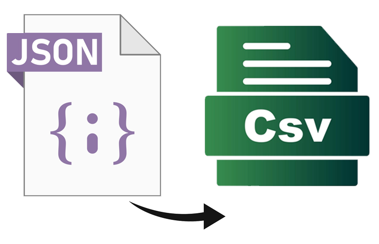
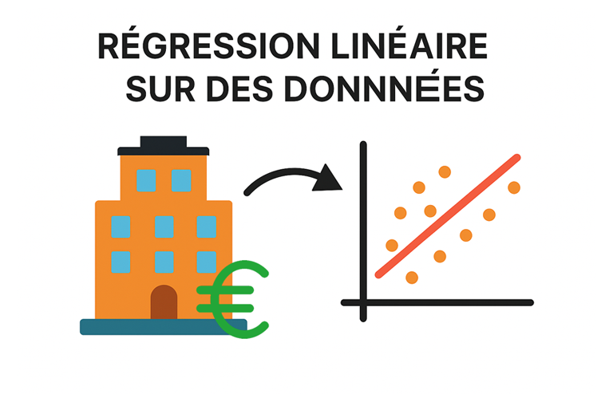
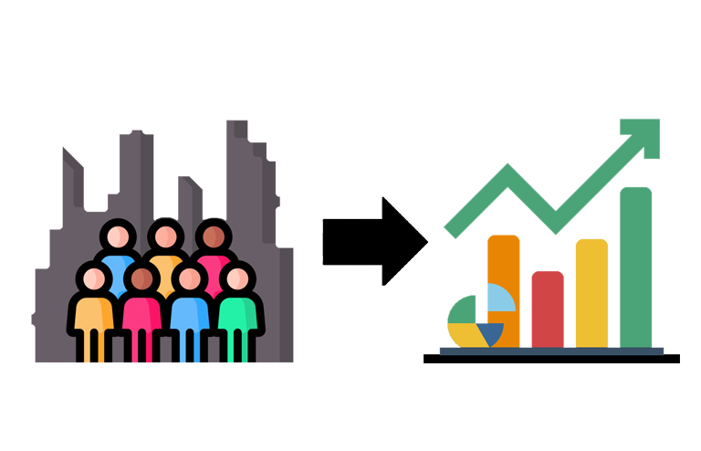

Mes projets

Gestion de fichiers
Extraction et traitement de données d’un fichier JSON pour produire un CSV structuré
Python

Conception et implémentation d’une base de données
Conception complète d’une base de données MySQL pour une coopérative de sel..
Python
SQL
Création d’un reporting
Création d’un tableau Excel dynamique pour suivre ses notes et évaluer ses compétences.
VBA
Excel

Régression linéaire sur des données réelles
Prédiction du prix immobilier à partir d’un modèle de régression linéaire
R
Excel

Échantillonnage et Estimation
Estimation de population et analyse statistique avec R sur des données de communes.
R
Challenge Dataviz
Conception d’une infographie sur la scolarisation des jeunes
Excel
Power bi
Construction et présentation d’indicateurs de performances
Analyse de performance d’entreprise à travers des indicateurs économiques.
Excel
Portfolio
Site personnel pour présenter ses projets, compétences et parcours
HTML
CSS
JavaScript